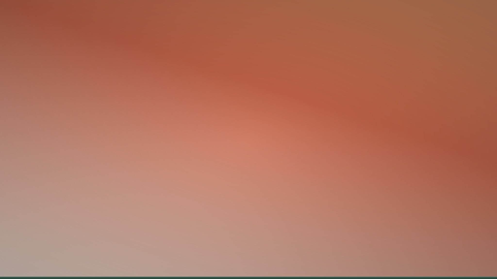

Щенок в 8–16 недель — это маленькая кусательная машина. Не потому что агрессивный, а потому что так работает щенячье обучение: зубами исследуют мир, зубами общаются, зубами понимают, где граница допустимого. Если однопомётники объясняли это визгом и уходом — вам предстоит объяснить то же самое. Семь дней, без физических наказаний, с конкретными шагами на каждый день.
До разлучения с помётом (обычно в 7–8 недель) щенки учатся силе укуса в игре с братьями и сёстрами. Механизм прост: укусил слишком сильно — получил визг и паузу в игре. Игра прекращается. Щенок делает вывод: сильный укус = конец развлечения. Так формируется «bite inhibition» — торможение укуса.
Когда щенок приходит в дом, он применяет ту же стратегию к людям. Задача хозяина — стать частью этой обратной связи и дать чёткий сигнал о допустимой силе.
Важно: цель не «щенок никогда не кусает», а «щенок умеет контролировать силу». Собака с хорошим bite inhibition, даже испугавшись, не нанесёт серьёзных повреждений — она «знает», как остановиться. Это навык безопасности на всю жизнь.
🐾 Спросите AI-ветеринара прямо сейчас
AnimaLife — приложение, где AI-ветеринар отвечает на вопросы о кошке или собаке 24/7. Бесплатно, без записи и очередей.
Когда щенок кусает больно — коротко и резко скажите «ой!» (или «уй!» — важна неожиданность, а не слово). Не грозно, не наказывающим тоном — удивлённо и резко. Именно так реагировал бы однопомётник.
После «ой!» — прекратить игру на 20–30 секунд. Уберите руку, отвернитесь, встаньте. Не смотреть на щенка, не ругать, не объяснять. Тишина и пауза — это наказание для щенка, которому нужна игра.
Возобновите игру через 20–30 секунд. Если укусил снова — снова «ой!» и пауза. За одну игровую сессию (15 минут) допустимо 3–5 повторений. Больше — щенок перевозбуждён, заканчивайте игру.
Чего не делать: не бить по носу, не шлёпать по лапам, не кричать — это вызывает страх или воспринимается как игра и усиливает кусание.
Щенок начинает кусать — сразу предложите жевалку или игрушку. Рука убрана, вместо неё — правильный предмет. Когда щенок берёт игрушку — краткая похвала и продолжение игры.
Что работает как жевалка:
Ротация игрушек каждые 2–3 дня сохраняет интерес. Щенок быстро теряет интерес к «известной» игрушке.
К этому моменту щенок начинает понимать сигнал «ой!». Теперь работаем с конкретными ситуациями, которые провоцируют кусание:
К концу первой недели у щенка уже есть базовое понимание. Закрепляйте через структуру:
Реальные ожидания по времени:
Регрессы — норма. После смены зубов (4–5 месяцев) щенок может снова начать активно кусать — дёсны чешутся. Увеличьте предложение жевалок, вернитесь к базовому протоколу.
🐾 Дневник здоровья питомца — в кармане
Вес, прививки, симптомы и напоминания в одном приложении. AnimaLife следит за здоровьем питомца вместо вас.
🐾 Понравился разбор?
Подпишитесь на канал — каждый день разбираем по одному тревожному симптому у кошек и собак: что в пределах нормы, а когда пора к врачу. Подпишитесь, чтобы не пропустить разбор, который может спасти здоровье вашего питомца.
Щенок кусает — это обучение, не агрессия. «Ой!» плюс пауза плюс переключение на жевалку — простой трёхшаговый протокол, который работает уже в первую неделю. Семь дней последовательности — и щенок начинает понимать правила игры. О следующем этапе — первых командах — читайте в статье первые команды для щенка.